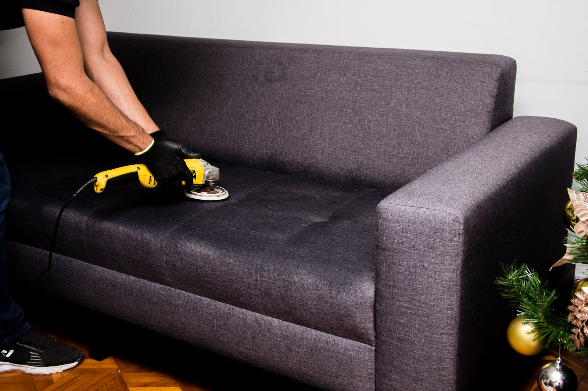
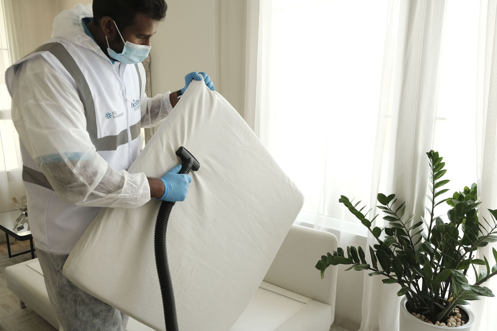
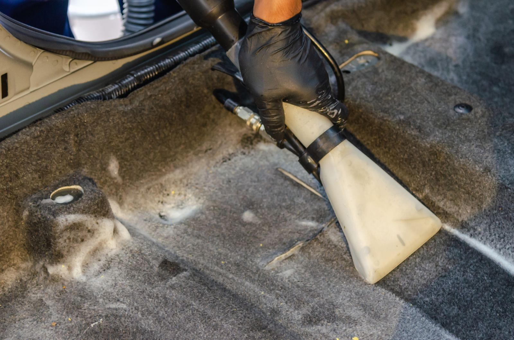

Aspiração & extração
Remoção de detritos em todos os vãos e extração a vácuo de manchas profundas em bancos e carpetes.
Excelência em cada detalhe
"Na Apex Wash, a limpeza de estofados vai além da superfície. Cada atendimento segue um protocolo técnico que devolve textura, cor e um ambiente mais saudável para quem vive nele."
Cada tecido pede um protocolo próprio. Avaliamos fibra, cor e uso antes de qualquer produto tocar o seu estofado.
Equipe em treinamento constante nas técnicas mais recentes de extração e desinfecção.
Eliminação rigorosa de agentes alergênicos, para um ambiente seguro de verdade.
Estofados
Sofás, poltronas e cadeiras recuperam o aspecto de novos — sem agredir o material.

Tecnologia de ponta para revitalizar cada fibra do mobiliário, sem agredir o material.
Recuperação da cor e da textura originais através de produtos de pH balanceado.
Foto do nosso processo técnico — passe o cursor para ver o realce de cor do resultado.
Saúde e bem-estar

Relatório de higienização
Tecnologia que remove 99,9% dos ácaros, fungos e bactérias. Essencial para quem tem alergias.
Fórmulas enzimáticas que neutralizam suor e umidade, devolvendo o frescor de novo.
Ambiente higienizado e perfumado para um sono profundo e restaurador.
Sua saúde não pode esperar. Renove seu colchão hoje →
Automotivo
O interior do carro é um ambiente fechado. Nossa higienização remove ácaros e melhora a qualidade do ar que você respira a cada trajeto.

Protocolo de limpeza
Remoção de detritos em todos os vãos e extração a vácuo de manchas profundas em bancos e carpetes.
Limpeza de painéis e portas sem deixar resíduos gordurosos, mantendo o aspecto original.
Condicionadores premium que devolvem a elasticidade e evitam rachaduras causadas pelo sol.
Como funciona
Envie uma foto do item e conte o que precisa. Retornamos com a orientação e o orçamento.
Combinamos o melhor dia e horário para o atendimento no seu endereço.
Equipe com protocolo próprio, extração e produtos de pH balanceado para cada tipo de fibra.
Você recebe o item com textura, cor e frescor recuperados — e a orientação de secagem.
Quem já sentiu a diferença
"Depoimento real de um cliente da Apex Wash vai aqui — pode ser sobre estofados, colchão ou o carro."
Onde atendemos
Levamos a higienização técnica da Apex Wash até você — capital e Região Metropolitana, no conforto do seu endereço. Na dúvida sobre a sua região, é só chamar no WhatsApp.
Dúvidas frequentes
É só chamar no WhatsApp e enviar uma foto do item. Retornamos com a orientação e o valor para o seu caso.
Sofás, poltronas e cadeiras; colchões; e o interior de veículos — bancos, carpetes, forro e couro.
Sim. Atendemos em São Paulo e na Região Metropolitana, no seu endereço, com equipe e equipamento próprios.
Depende do item e do nível de sujeira. No atendimento, orientamos o tempo de secagem recomendado antes do uso.
Fale com a gente pelo WhatsApp para confirmar as formas de pagamento disponíveis para o seu atendimento.
Só deixar o item acessível. Nossa equipe leva todo o equipamento e protege a área ao redor durante o serviço.
Chame a Apex Wash no WhatsApp e receba a orientação para o seu caso — sofá, colchão ou o interior do carro.
Falar no WhatsApp(11) 92544-4435
Chamar no WhatsAppcontato.apexwash@gmail.com
Enviar e-mail